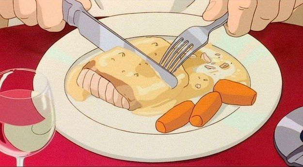

Salmon with cream sauce

- 2 to 4 salmon fillets
- 1 packet of baby carrots
- 1 cup of water
- 6 tbsp of butter
- 2 tbsp of brown sugar
- 2 tbsp of fresh lemon juice
- Salt
- Black pepper
- 2 tbsp of all-purpose flour
- 1 cup of milk

- Remove salmon skin and season the salmon with salt and pepper.
- Add 2 tbsp of butter into a saucepan and heat on medium-low. Fry the salmon until both sides turn golden brown.
- Melt 2 tbsp of butter in a saucepan over medium heat. Add chopped garlic and shallots. Stir well until the garlic turns light brown.
- Lower the heat to medium-low and add flour. Mix well until the mixture thickens.
- Add milk while stirring. Mix until the mixture thickens again.
- Add baby carrots and 1 cup of water until it boils. Poke the carrots with a fork to check if it is soft enough.
- Drain the baby carrots and add 2 tbsp of butter. Add salt and pepper as seasoning.
- Add 2 tbsp of brown sugar. Mix well until the mixture thickens.
- Transfer the salmon onto a plate and pour the cream sauce over it. Place the glazed carrots on the side of the plate.
- Now you can eat it! Itadakimasu!